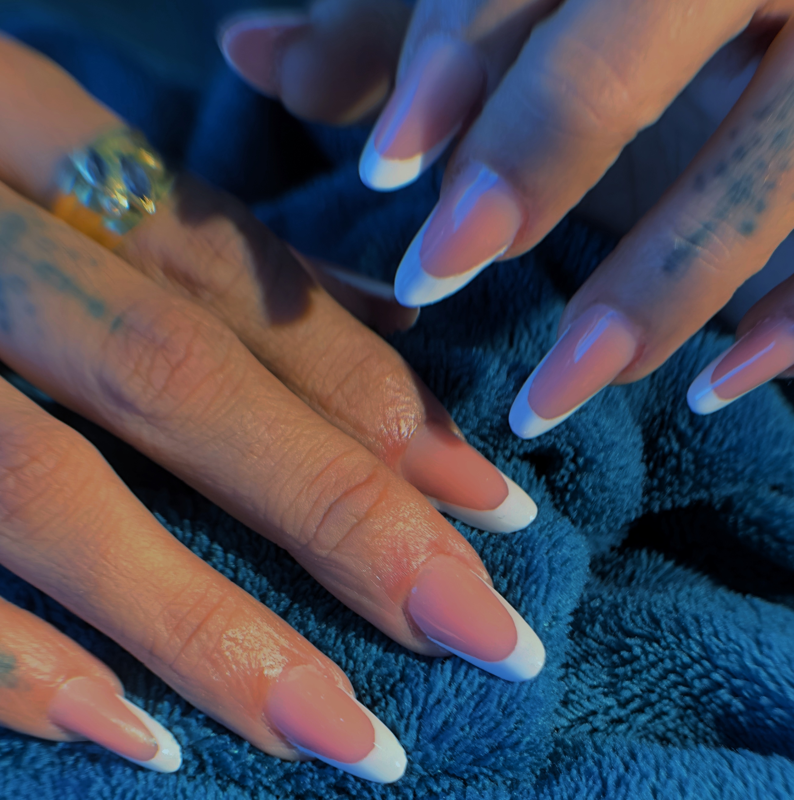
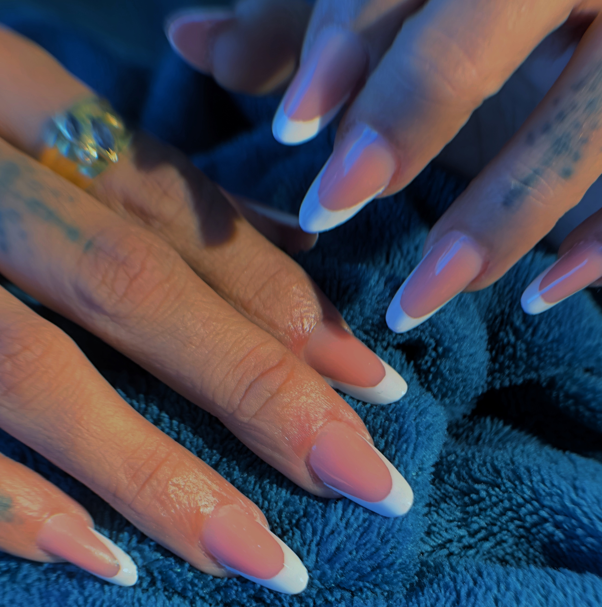
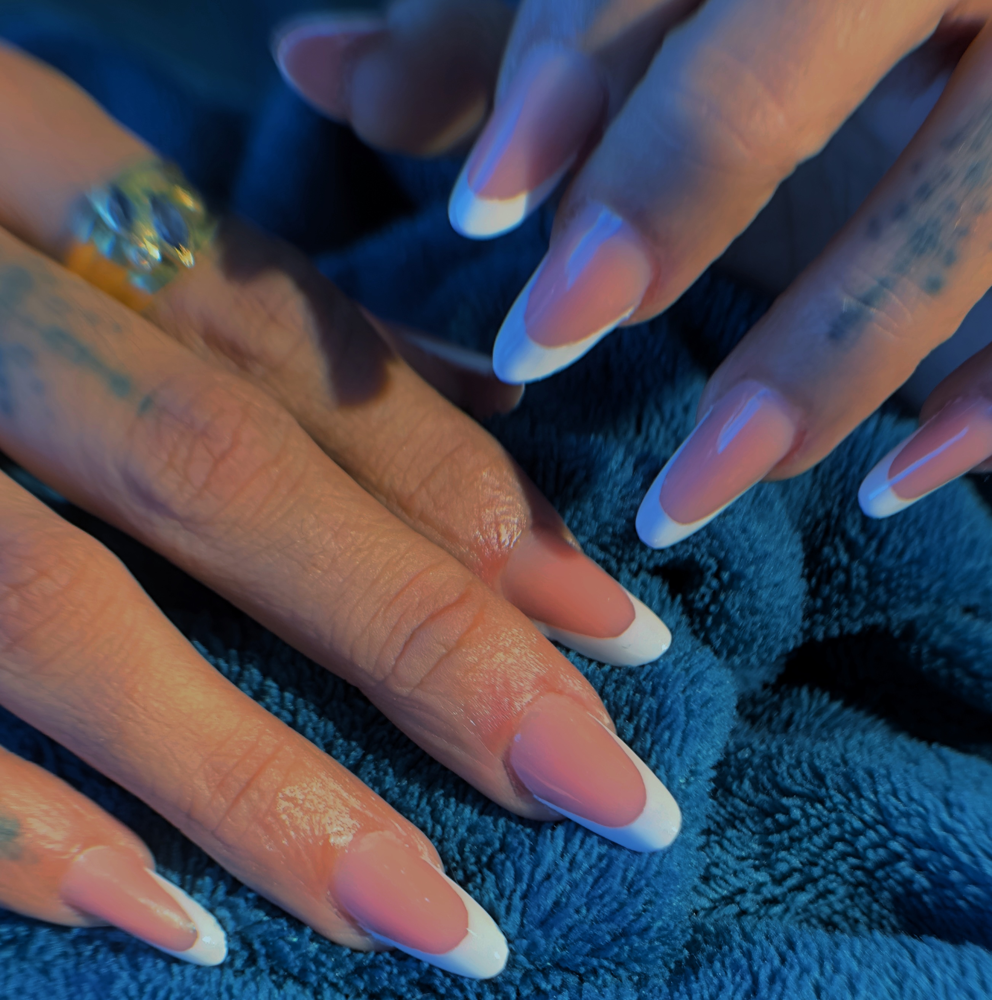

Bienvenue chez Nails by NFB à Corbeil-Essonnes. Je m'adapte à tous les styles et envies pour mettre vos ongles en valeur avec raffinement et créativité. Que vous aimiez le nude, le design, le bling ou les tendances du moment — ici, tout est possible !
Consultez la galerie pour voir mes dernières créations.
